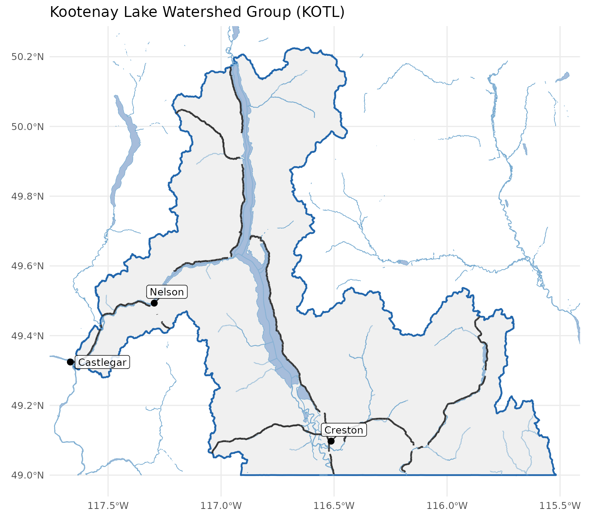
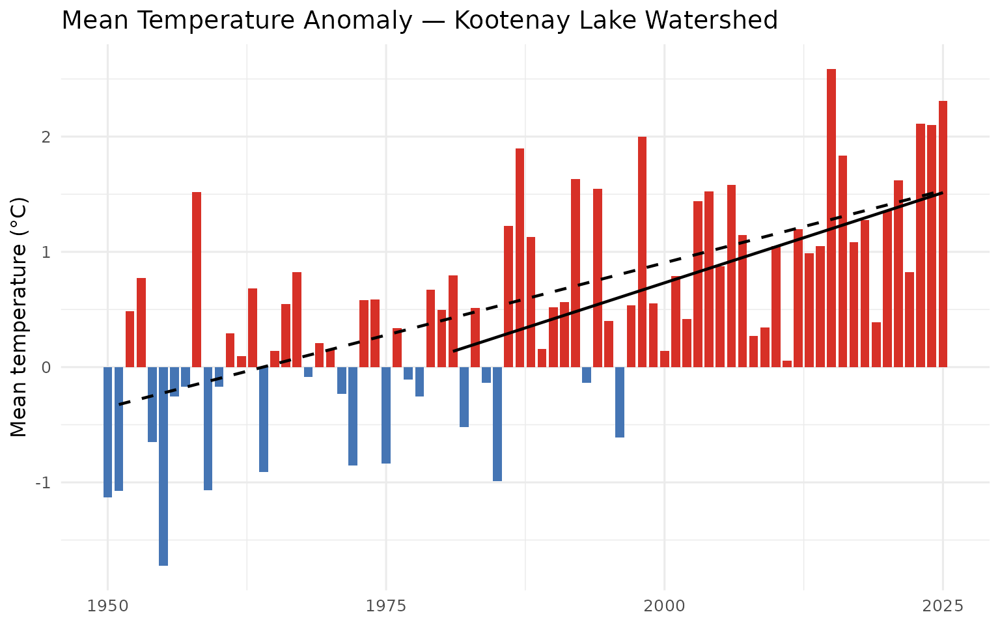
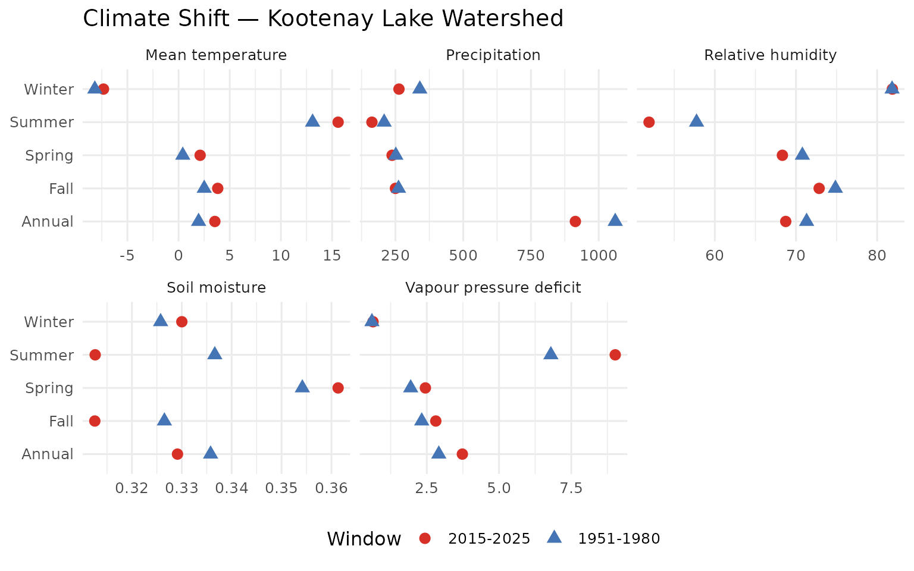
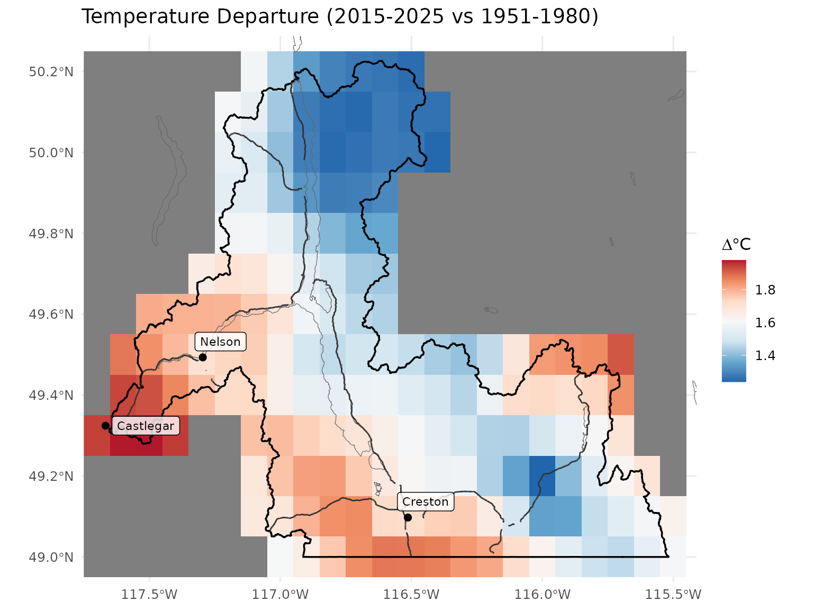
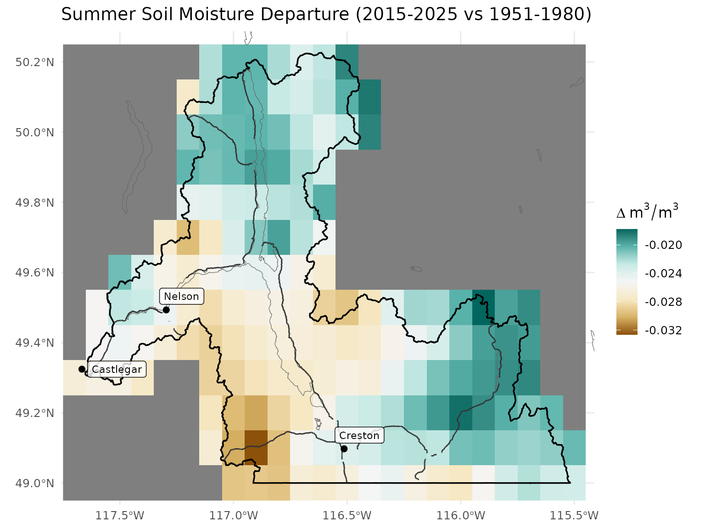
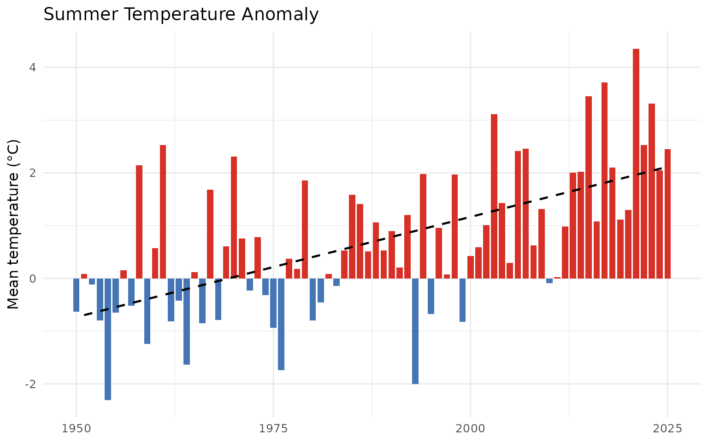
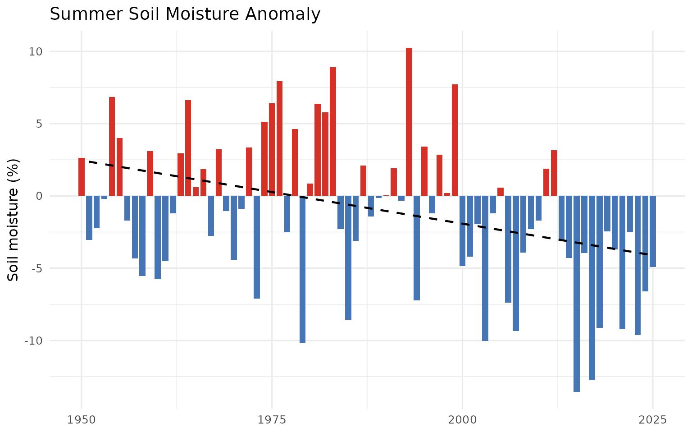

Climate Departure Analysis for a Watershed
Source:vignettes/climate-departure.Rmd
climate-departure.RmdThe cd package computes climate departure statistics from ERA5-Land reanalysis data for any area of interest. This vignette demonstrates the full analysis pipeline: connecting to the cloud-hosted data catalog, extracting zonal means for a watershed, computing anomalies against a pre-warming baseline, and running trend analysis.
Area of Interest
We use the Kootenay Lake (KOTL) watershed group from the BC
Freshwater Atlas, shipped with the package. Any sf polygon
works as an AOI.
library(cd)
library(sf)
aoi <- st_read(
system.file("extdata", "example_aoi_kotl.gpkg", package = "cd"),
quiet = TRUE
)
aoi_bb <- sf::st_bbox(aoi)
ggplot() +
geom_sf(data = aoi, fill = "#f0f0f0", color = "#2166ac", linewidth = 0.8) +
geom_sf(data = lakes, fill = "#a6bddb", color = "#74a9cf", linewidth = 0.2) +
geom_sf(data = rivers, fill = "#a6bddb", color = "#74a9cf", linewidth = 0.2) +
geom_sf(data = streams, color = "#74a9cf", linewidth = 0.4, alpha = 0.6) +
geom_sf(data = highways, color = "#333333", linewidth = 0.8) +
geom_sf(data = towns, color = "black", size = 2.5) +
ggrepel::geom_label_repel(
data = towns,
aes(label = name, geometry = geom),
stat = "sf_coordinates",
size = 3.5, fill = "white", alpha = 0.85,
label.padding = unit(0.2, "lines"),
min.segment.length = 0
) +
coord_sf(
xlim = c(aoi_bb["xmin"], aoi_bb["xmax"]),
ylim = c(aoi_bb["ymin"], aoi_bb["ymax"])
) +
labs(title = "Kootenay Lake Watershed Group (KOTL)") +
theme_minimal(base_size = 12) +
theme(axis.title = element_blank())
Kootenay Lake (KOTL) watershed group in southeastern British Columbia showing major waterbodies, rivers, and highways.
Connect to the Data Catalog
The cd package serves ERA5-Land climate data as Cloud-Optimized
GeoTIFFs on S3, indexed by a STAC catalog. cd_catalog()
reads the catalog and returns a tidy tibble of available variables and
periods.
catalog <- cd_catalog()
knitr::kable(catalog, caption = "Available climate variables and periods in the STAC catalog.")Extract Climate Time Series
cd_extract() crops each COG to the AOI and computes the
spatial mean per year. This runs directly against the cloud-hosted data
— no local download needed.
ts <- cd_extract(catalog, aoi)
knitr::kable(head(ts, 10), caption = "First 10 rows of the extracted climate time series.")| variable | period | year | value |
|---|---|---|---|
| prcp | annual | 1950 | 1107.4576 |
| prcp | annual | 1951 | 1075.4640 |
| prcp | annual | 1952 | 701.8242 |
| prcp | annual | 1953 | 1173.6203 |
| prcp | annual | 1954 | 1252.4347 |
| prcp | annual | 1955 | 1133.0697 |
| prcp | annual | 1956 | 1029.7109 |
| prcp | annual | 1957 | 917.9623 |
| prcp | annual | 1958 | 1054.0208 |
| prcp | annual | 1959 | 1221.0120 |
We now have annual and seasonal values for five climate variables across 76 years (1950–2025) for the Kootenay Lake watershed.
Choosing a Baseline
The choice of reference period shapes the story. The WMO standard 1981–2010 baseline is widely used for comparability, but it includes decades of warming. A pre-warming baseline (1951–1980) reveals the full magnitude of departure — what Pauly (1995) called avoiding the “shifting baseline syndrome.”
# Pre-warming baseline
bl_early <- cd_baseline(ts, baseline_years = 1951:1980)
# WMO standard
bl_wmo <- cd_baseline(ts, baseline_years = 1981:2010)
knitr::kable(bl_early, caption = "Pre-warming baseline means (1951-1980) by variable and period.", digits = 2)| variable | period | baseline_mean |
|---|---|---|
| prcp | annual | 1060.91 |
| prcp | fall | 261.30 |
| prcp | spring | 251.36 |
| prcp | summer | 208.31 |
| prcp | winter | 339.95 |
| rh | annual | 71.31 |
| rh | fall | 74.85 |
| rh | spring | 70.79 |
| rh | summer | 57.75 |
| rh | winter | 81.84 |
| soil_moisture | annual | 0.34 |
| soil_moisture | fall | 0.33 |
| soil_moisture | spring | 0.35 |
| soil_moisture | summer | 0.34 |
| soil_moisture | winter | 0.33 |
| tmean | annual | 1.96 |
| tmean | fall | 2.50 |
| tmean | spring | 0.41 |
| tmean | summer | 13.09 |
| tmean | winter | -8.18 |
| vpd | annual | 2.92 |
| vpd | fall | 2.33 |
| vpd | spring | 1.94 |
| vpd | summer | 6.79 |
| vpd | winter | 0.60 |
Anomalies
cd_anomaly() computes departures from the baseline.
Temperature, VPD, and RH use absolute deviations. Precipitation and soil
moisture use percent of normal.
ano <- cd_anomaly(ts, bl_early)
knitr::kable(head(ano, 10), caption = "Anomalies relative to the 1951-1980 baseline.", digits = 3)| variable | period | year | anomaly | anomaly_type | unit |
|---|---|---|---|---|---|
| prcp | annual | 1950 | 4.387 | pct_normal | % |
| prcp | annual | 1951 | 1.371 | pct_normal | % |
| prcp | annual | 1952 | -33.847 | pct_normal | % |
| prcp | annual | 1953 | 10.623 | pct_normal | % |
| prcp | annual | 1954 | 18.052 | pct_normal | % |
| prcp | annual | 1955 | 6.801 | pct_normal | % |
| prcp | annual | 1956 | -2.941 | pct_normal | % |
| prcp | annual | 1957 | -13.474 | pct_normal | % |
| prcp | annual | 1958 | -0.650 | pct_normal | % |
| prcp | annual | 1959 | 15.090 | pct_normal | % |
Temperature Departure
trn <- cd_trend(ano, trend_start = c(1951, 1981))
cd_plot_timeseries(
ano,
variable = "tmean",
period = "annual",
trend = trn,
title = "Mean Temperature Anomaly — Kootenay Lake Watershed"
)
Annual mean temperature anomaly for the Kootenay Lake watershed relative to 1951-1980 baseline. Red bars indicate warmer-than-baseline years.
knitr::kable(cd_summary(trn[trn$variable == "tmean", ]),
caption = "Temperature trend statistics for the Kootenay Lake watershed.")| Parameter | Period | Slope | Years | Total Change | Unit | p-value |
|---|---|---|---|---|---|---|
| Mean temperature | Annual | 0.025 | 75 | 1.9 | °C | 0.0000 |
| Mean temperature | Fall | 0.024 | 75 | 1.8 | °C | 0.0014 |
| Mean temperature | Spring | 0.027 | 75 | 2.1 | °C | 0.0000 |
| Mean temperature | Summer | 0.038 | 75 | 2.9 | °C | 0.0000 |
| Mean temperature | Winter | 0.016 | 75 | 1.2 | °C | 0.0370 |
| Mean temperature | Annual | 0.031 | 45 | 1.4 | °C | 0.0015 |
| Mean temperature | Fall | 0.033 | 45 | 1.5 | °C | 0.0037 |
| Mean temperature | Spring | 0.004 | 45 | 0.2 | °C | 0.8220 |
| Mean temperature | Summer | 0.053 | 45 | 2.4 | °C | 0.0000 |
| Mean temperature | Winter | 0.020 | 45 | 0.9 | °C | 0.2776 |
The Kootenay Lake watershed has warmed substantially since the mid-20th century. The annual mean temperature trend since 1951 gives a Total Change that quantifies this cumulative shift.
Comparing Time Windows
cd_compare() directly answers: “How different is the
recent climate from the historical climate?”
cmp <- cd_compare(ts,
window_a = 2015:2025,
window_b = 1951:1980,
method = "mean_diff"
)
knitr::kable(cmp, caption = "Comparison of recent (2015-2025) vs pre-warming (1951-1980) means.", digits = 2)| variable | period | mean_a | mean_b | difference | method |
|---|---|---|---|---|---|
| prcp | annual | 913.85 | 1060.91 | -147.07 | mean_diff |
| prcp | fall | 249.97 | 261.30 | -11.33 | mean_diff |
| prcp | spring | 237.66 | 251.36 | -13.70 | mean_diff |
| prcp | summer | 163.22 | 208.31 | -45.09 | mean_diff |
| prcp | winter | 263.00 | 339.95 | -76.95 | mean_diff |
| rh | annual | 68.74 | 71.31 | -2.57 | mean_diff |
| rh | fall | 72.85 | 74.85 | -2.00 | mean_diff |
| rh | spring | 68.32 | 70.79 | -2.46 | mean_diff |
| rh | summer | 51.90 | 57.75 | -5.85 | mean_diff |
| rh | winter | 81.87 | 81.84 | 0.03 | mean_diff |
| soil_moisture | annual | 0.33 | 0.34 | -0.01 | mean_diff |
| soil_moisture | fall | 0.31 | 0.33 | -0.01 | mean_diff |
| soil_moisture | spring | 0.36 | 0.35 | 0.01 | mean_diff |
| soil_moisture | summer | 0.31 | 0.34 | -0.02 | mean_diff |
| soil_moisture | winter | 0.33 | 0.33 | 0.00 | mean_diff |
| tmean | annual | 3.55 | 1.96 | 1.59 | mean_diff |
| tmean | fall | 3.83 | 2.50 | 1.32 | mean_diff |
| tmean | spring | 2.11 | 0.41 | 1.70 | mean_diff |
| tmean | summer | 15.59 | 13.09 | 2.49 | mean_diff |
| tmean | winter | -7.33 | -8.18 | 0.85 | mean_diff |
| vpd | annual | 3.73 | 2.92 | 0.81 | mean_diff |
| vpd | fall | 2.81 | 2.33 | 0.49 | mean_diff |
| vpd | spring | 2.45 | 1.94 | 0.51 | mean_diff |
| vpd | summer | 9.02 | 6.79 | 2.23 | mean_diff |
| vpd | winter | 0.64 | 0.60 | 0.04 | mean_diff |
cd_plot_comparison(
cmp,
labels = c(a = "2015-2025", b = "1951-1980"),
title = "Climate Shift — Kootenay Lake Watershed"
)
Comparison of recent (2015-2025) vs pre-warming (1951-1980) climate for the Kootenay Lake watershed.
Spatial Patterns of Departure
The zonal mean tells us the watershed average, but departure varies across the landscape. Valley bottoms, high elevation areas, and rain shadows respond differently. We can map this by computing the difference between recent and historical period means directly from the rasters.
# Read the annual tmean COG and crop to AOI
tmean_row <- catalog[catalog$variable == "tmean" & catalog$period == "annual", ]
r_tmean <- cd_crop(tmean_row$href, aoi)
# Compute period means from the multi-year raster bands
years <- as.integer(names(r_tmean))
recent_idx <- which(years >= 2015 & years <= 2025)
historical_idx <- which(years >= 1951 & years <= 1980)
recent_mean <- mean(r_tmean[[recent_idx]])
historical_mean <- mean(r_tmean[[historical_idx]])
departure <- recent_mean - historical_mean
names(departure) <- "Temperature departure"
ggplot() +
geom_spatraster(data = departure) +
geom_sf(data = aoi, fill = NA, color = "black", linewidth = 0.6) +
geom_sf(data = lakes, fill = NA, color = "grey40", linewidth = 0.2) +
geom_sf(data = highways, color = "#333333", linewidth = 0.5) +
geom_sf(data = towns, color = "black", size = 2) +
ggrepel::geom_label_repel(
data = towns, aes(label = name, geometry = geom),
stat = "sf_coordinates", size = 3, fill = "white", alpha = 0.8
) +
scale_fill_distiller(
palette = "RdBu", direction = -1,
name = expression(Delta * degree * C)
) +
coord_sf(
xlim = c(aoi_bb["xmin"], aoi_bb["xmax"]),
ylim = c(aoi_bb["ymin"], aoi_bb["ymax"])
) +
labs(title = "Temperature Departure (2015-2025 vs 1951-1980)") +
theme_minimal(base_size = 12) +
theme(axis.title = element_blank())
Spatial pattern of annual mean temperature departure across the Kootenay Lake watershed. Difference between 2015-2025 mean and 1951-1980 mean (degrees C).
sm_row <- catalog[catalog$variable == "soil_moisture" & catalog$period == "summer", ]
r_sm <- cd_crop(sm_row$href, aoi)
years_sm <- as.integer(names(r_sm))
recent_sm <- mean(r_sm[[which(years_sm >= 2015 & years_sm <= 2025)]])
historical_sm <- mean(r_sm[[which(years_sm >= 1951 & years_sm <= 1980)]])
departure_sm <- recent_sm - historical_sm
names(departure_sm) <- "Soil moisture departure"
ggplot() +
geom_spatraster(data = departure_sm) +
geom_sf(data = aoi, fill = NA, color = "black", linewidth = 0.6) +
geom_sf(data = lakes, fill = NA, color = "grey40", linewidth = 0.2) +
geom_sf(data = highways, color = "#333333", linewidth = 0.5) +
geom_sf(data = towns, color = "black", size = 2) +
ggrepel::geom_label_repel(
data = towns, aes(label = name, geometry = geom),
stat = "sf_coordinates", size = 3, fill = "white", alpha = 0.8
) +
scale_fill_distiller(
palette = "BrBG", direction = 1,
name = expression(Delta ~ m^3/m^3)
) +
coord_sf(
xlim = c(aoi_bb["xmin"], aoi_bb["xmax"]),
ylim = c(aoi_bb["ymin"], aoi_bb["ymax"])
) +
labs(title = "Summer Soil Moisture Departure (2015-2025 vs 1951-1980)") +
theme_minimal(base_size = 12) +
theme(axis.title = element_blank())
Spatial pattern of summer soil moisture departure. Difference between 2015-2025 mean and 1951-1980 mean (m3/m3). Negative values (brown) indicate drying.
Seasonal Patterns
Temperature warming is often strongest in specific seasons. Let’s look at summer and winter separately.
summer_ano <- ano[ano$period == "summer" & ano$variable == "tmean", ]
winter_ano <- ano[ano$period == "winter" & ano$variable == "tmean", ]
trn_summer <- cd_trend(summer_ano, trend_start = 1951)
trn_winter <- cd_trend(winter_ano, trend_start = 1951)
cd_plot_timeseries(summer_ano, period = "summer", trend = trn_summer,
title = "Summer Temperature Anomaly")
knitr::kable(cd_summary(rbind(trn_summer, trn_winter)),
caption = "Seasonal temperature trends (summer vs winter).")| Parameter | Period | Slope | Years | Total Change | Unit | p-value |
|---|---|---|---|---|---|---|
| Mean temperature | Summer | 0.038 | 75 | 2.9 | °C | 0.000 |
| Mean temperature | Winter | 0.016 | 75 | 1.2 | °C | 0.037 |
Precipitation and Soil Moisture
While temperature shows clear departure, precipitation trends in BC are often less pronounced. Soil moisture integrates both temperature and precipitation signals — warmer temperatures drive more evapotranspiration even when rainfall is stable.
sm_ano <- ano[ano$variable == "soil_moisture" & ano$period == "summer", ]
trn_sm <- cd_trend(sm_ano, trend_start = 1951)
cd_plot_timeseries(sm_ano, variable = "soil_moisture", period = "summer",
trend = trn_sm, title = "Summer Soil Moisture Anomaly")
all_trends <- cd_trend(
ano[ano$period == "annual", ],
trend_start = c(1951, 1981)
)
knitr::kable(cd_summary(all_trends),
caption = "Annual trend statistics for all variables, Kootenay Lake watershed.")| Parameter | Period | Slope | Years | Total Change | Unit | p-value |
|---|---|---|---|---|---|---|
| Precipitation | Annual | -0.168 | 75 | -12.6 | % | 0.0062 |
| Relative humidity | Annual | -0.038 | 75 | -2.8 | % | 0.0008 |
| Soil moisture | Annual | -0.028 | 75 | -2.1 | % | 0.0680 |
| Mean temperature | Annual | 0.025 | 75 | 1.9 | °C | 0.0000 |
| Vapour pressure deficit | Annual | 0.012 | 75 | 0.9 | Pa | 0.0000 |
| Precipitation | Annual | -0.222 | 45 | -10.0 | % | 0.0944 |
| Relative humidity | Annual | -0.089 | 45 | -4.0 | % | 0.0001 |
| Soil moisture | Annual | -0.085 | 45 | -3.8 | % | 0.0058 |
| Mean temperature | Annual | 0.031 | 45 | 1.4 | °C | 0.0015 |
| Vapour pressure deficit | Annual | 0.023 | 45 | 1.1 | Pa | 0.0000 |
Interpretation
The analysis reveals the climate departure pattern common across British Columbia’s interior watersheds:
- Temperature is rising. The cumulative shift since the mid-20th century is substantial and statistically significant across all seasons.
- Precipitation trends are weak. Year-to-year variability is high but there is no strong directional change.
- Soils are drying despite stable precipitation. Warmer temperatures increase evapotranspiration, pulling moisture from soils even when the same amount of rain falls. For aquatic ecosystems, drier soils mean reduced summer baseflows during the period when flows are already lowest.
This pattern — warming without precipitation change leading to hydrological drought — is the mechanism connecting climate departure to habitat degradation in salmon-bearing watersheds.
Data Source
All data are from the ERA5-Land reanalysis dataset produced by ECMWF for the Copernicus Climate Change Service (Muñoz-Sabater et al. 2021). Anomalies are relative to user-defined baseline periods. Trends are computed using the Mann-Kendall test for significance and the Theil-Sen estimator for slope magnitude.